Hola! Soy Florencio Rojas
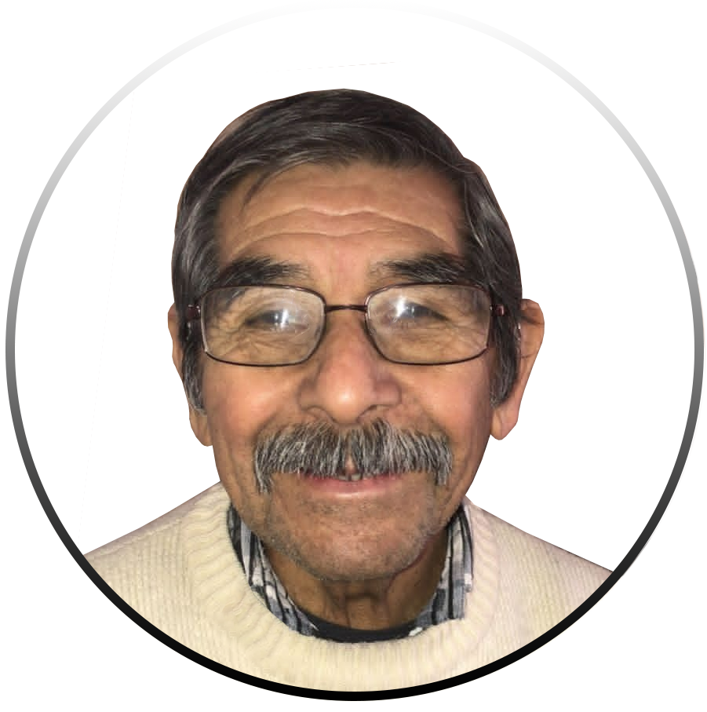Voy a contar un poco de mi vida
Totora Pampa
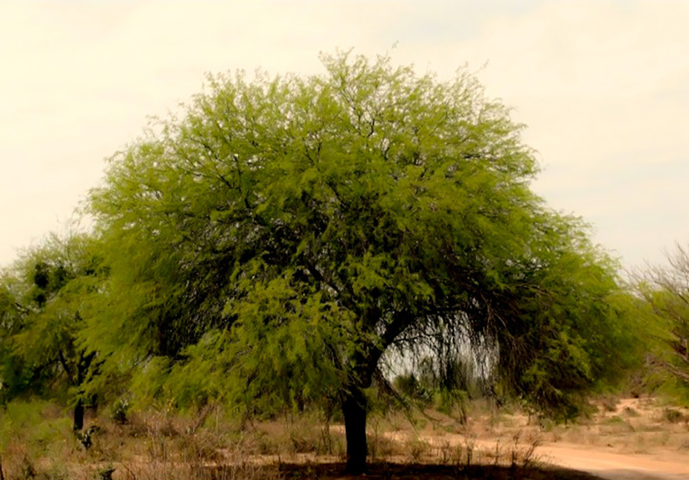Nací en la casa de mis papás en Totora Pampa, Santiago del Estero, en el año 1937.
La casa de mis papás
La casa era grande, tenía dos habitaciones y una galería que tendría como 8 metros. El techo hasta la galería era de barro y no pasaba el agua. A partir de la galería teníamos un techo hecho con ramas para tener un lugar donde sentarnos bajo la sombra. Papá tenía reloj de bolsillo, pero cuando no estaba él y queríamos saber la hora nos guiábamos por la sombra. En la cocina apilábamos ramas y leña. En el medio de la cocina había un fogón y alrededor nos sentábamos nosotros. Éramos muchos! Cazábamos mulita y las hacíamos en las brasas. Eran más ricas que el lechón! Teníamos también animalitos: había ovejas, cabras y vacas. Cuando murió la abuela como herencia a mamá le tocó una vaca.
Comí tortuga
Un día con un primo vimos una tortuga que teníamos y que ya estaba criadita. Dijimos: Vamos a comerla? Pero no sabíamos cómo hacer. Le atamos la cabecita porque se le metía para adentro. Después la dimos vuelta y le sacamos la cáscara. Adentro no tenía nada porque era chiquita. No me acuerdo como la cocinamos, pero me parece que la hervimos.
Visita a Santiago con un compañero de Fate
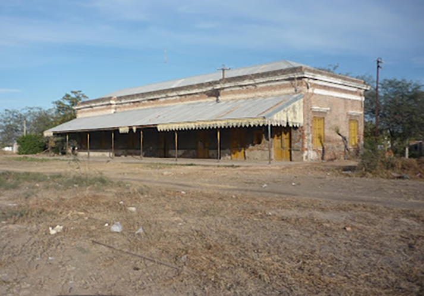Una vez fuimos en tren a Santiago con Juan, un compañero de la fábrica. Le había avisado a mamá por carta que iba a ir a visitarlos. Cuando llegamos allá pasamos por un carril largo en el que se corrían carreras de caballo. Llegamos en colectivo por la mañana. Caminamos por un camino y Juan se pinchó varias veces con las plantas que había en los costados. Llegamos y todos estaban contentos de verme. Estábamos todos menos Zulema, mi hermana más grande.
El almacén del turco
Como a 40 cuadras de nuestra casa, cruzando la ruta, quedaba el almacén del turco. Nosotros casi siempre íbamos al almacén a caballo por un camino que teníamos cruzando el monte. Íbamos a la mañana y volvíamos a la tarde.
Un viento fuerte cuando volvíamos de la escuela
Iba a la escuela con Oco caminando por un camino ancho. La escuela quedaba lejos. Yo iba como a 3er grado. En la escuela, antes de salir, te daban de comer y todo. A veces nos daban guiso o locro. La escuela donde iban mis hermanas quedaba más cerca, pero comida no te daban. Un día cuando volvíamos nos agarró un viento..! Ahh que tierra! No se veía nada! No me olvido nunca. Los libros se nos volaron.
Papá y mamá
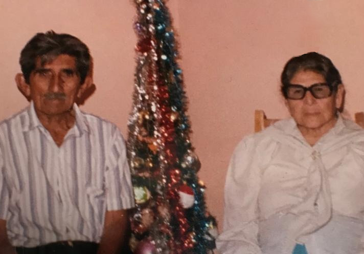Mi papá se llamaba Pedro Rojas y mi mamá se llamaba Isidora Pacheco. Eran muy buenos. A mis hermanos y a mí nos daba lástima cuando mataban algún animal, pero mamá me enseño que Dios nos dio los animales para que los comamos.
Trabajando con papá
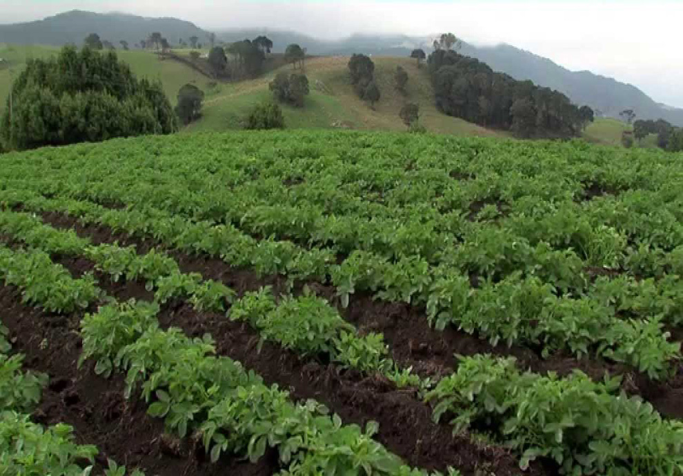Con papá íbamos a trabajar desde que yo era chiquito. Empecé a acompañarlo entre los 6 y 8 años y de a poquito le fui ayudando. Íbamos en tren a Tucumán a buscar trabajo. Solíamos ir a Alto Verde. Cuando llegamos a Tucumán, en algún lugar del campo, bajo algún árbol, hacíamos una choza colocando una horqueta a la que le poníamos palos y ramas para dormir y no mojarnos. No se llovía nunca. Hacía frío, pero llevábamos para taparnos. Hacíamos un colchón alto con pasto y hojas para dormir más cómodos. A media cuadra de donde trabajábamos nosotros empezaban los cerros y ahí sembraban arveja. En todas las partes donde estábamos había cerros. Había también un monte, pero como a 3 o 4 cuadras y a veces íbamos. Yo era quién cocinaba y a las doce ponían la banderita y parábamos para comer. Cerca de donde estábamos había hectáreas en las que se sembraban naranjas y limones en hilera. Cada tanto, cuando íbamos a casa, probábamos alguna para ver si era dulce. Eran "sanguinas", hilitos de sangre parecía que tenían! Ahh eran de dulces!
La esposa del patrón murió quemada!
En uno de los trabajos vivíamos a 1 cuadra y media de la casa del Patrón en un galpón que el patrón tenía y que nos dio para que durmamos. Al mediodía, se sentían los gritos. Salgo, miro, había una planta de caña y la esposa corría alrededor de la caña prendida fuego. Yo fui, pero cuando llegamos ya la habían envuelto con sábanas y que se yo. La mujer se prendió fuego porque el marido era jugador y perdió toda la plata que tenían en el juego. Él iba al campo, a un lugar donde no entraba la policía. Tenía un lugar para jugar a la taba y el perdió todo. Después se enteró la esposa, se prendió fuego, la llevaron a Alto Verde y como a las 5 de la mañana murió.
Me emborraché!
Sabíamos ir a la casa del patrón y papá jugaba con él a las cartas. Me mandaban a comprar vino. A unos 15 o 20 metros había una zanja y yo tenía que cruzar la zanja para ir al almacén. Fui a comprar, después me convidaron vino, tomé y me emborraché. Papá ese día me llevó hasta el galpón al hombro. Tendría 6 o 7 años. Me mamé che!
El matadero
Al matadero lo teníamos como a 40 cuadras e íbamos caminando. A las vacas las arriban, le pegaban con el látigo y se iban hasta un lugar. Después llegaba un momento cuando a algunas le pegaban un martillazo y caían.
Chimango
Cuando era chico tuve un caballo. Chimango le pusimos. Mucho tiempo lo tuve. Era grande, negro y brioso. Mi primo a veces venía buscarme a todo galope y nos íbamos por ahí a caballo. Cuando yo lo largaba a Chimango y se me iba él lo agarraba. Con mi caballo él muchas veces jineteaba. Con blanca a veces lo montábamos. Una vez volvíamos con ella por la noche y había tormenta. Refucilaba mucho. No quisimos bajar de Chimango pero no pudimos porque andaban las víboras y seguimos galopando hasta llegar a la casa. Otra vez íbamos con Chimango con Blanca para la casa de la abuela. Ella le dijo Icoo y Chimango se paró en dos patas. Blanca se asustó y le dije que no le diga así para que no hiciera eso. Otro día vino una tormenta fuerte y cayeron piedras. Chimango se asustó y corto el lazo. Teníamos también un burrito que se llamaba Pucara. Él también estaba asustado, pero no se podía soltar porque estaba atado con una cadena. Al otro día al burrito lo tocábamos y se caía porque lo habían golpeado fuerte las piedras que cayeron. Por unos cuantos días no pudimos montarlo. Chimango, como estaba asustado y como era brioso, salió corriendo. Había unos pozos que teníamos para sacar el agua. En uno de esos pozos calló Chimango y se me murió ahogado.
Los pumas
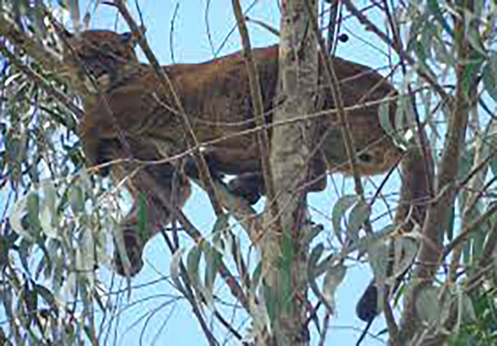Donde vivíamos había pumas que nos comían los animalitos. Un día apareció uno, los perritos que teníamos lo corrieron y se subió a un árbol. Nosotros no teníamos arma pero un tío mío tenía y le dispararon.
Muerte de Evita
Teníamos radio. Por la radio, en el 52, nos enteramos de que murió Evita. Yo tenía 15 años.
Trabajé 2 veces en Santa Fé
Fui a Rosario y pregunté allá como tenía que hacer para llegar a donde tenía que trabajar. Me tomé un colectivo que me llevaba y cuando llegué me estaba esperando papá. Llegué yo y fuimos en sulqui a la casa. Ahí estaba un tío porque papá trabajaba con él. En ese trabajo tuvimos que cosechar maíz. Faltaban 15 días y le dije: - Papá.. Por qué no te vas? Total falta poco. Arreglamos la cuenta y papá se fue para Santiago porque allá tenía¬¬¬ que pagarle al turco. Cuando terminamos el tío se tomó un colectivo para Santiago y yo me vine para Buenos Aires. Yo había estado en una fábrica que hacía departamentos. Ahí trabajé como ayudante antes de dedicarme a hacer cajones.
Me fui para Buenos Aires
Me parece que tenía 15 o 16 años cuando me fui a Buenos Aires. Zulema ya vivía allá y a veces comía en la casa de la comadre. El esposo de ella hacía fardos porque tenía un telar. Ahí trabajé yo. Tenías que tener cuidado porque la paja brava te corta. Con eso hacía rollos grandes de cortina.
Me tocó la colimba
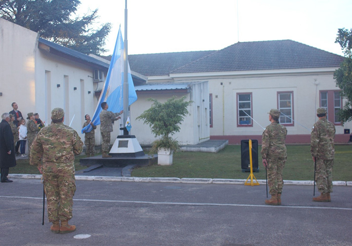Por un año y dos días me tocó hacer la colimba en Campo de Mayo en la parte de Enfermería donde practicamos sanidad. Fue hermoso. Me enseñaron de todo. Una vez salimos a caminar por el monte, anduvimos por todos y nos pinchamos por todos lados con las espinas que había. Cuando llegamos a la casa nos esperaban con sopa. Pero la sopa tenía sal inglesa y tuvimos que salir corriendo al baño. Otra vez habíamos, en navidad, estábamos todos juntos. Éramos como 80 en total y los de mi grupo eran como 30. Estábamos en unos cuartitos de suboficiales y un compañero chiquito y bajito que era terrible para festejar le empezó a disparar al techo. La pasé bien en la colimba.
Otros trabajos que tuve antes de Fate
En un trabajo trabajé de cajonero haciendo cajones para verdura y para botellas. Teníamos una técnica para hacer rápido los cajones y solíamos competir para ver quien los hacía más rápido. Los cajones para las botellas de Quilmes llevaban un montón de clavos. A veces te golpeabas un dedo y medio morado quedaba. También trabajé en la construcción, en un aserradero y en una bodega por un año.
Bodega Furlotti
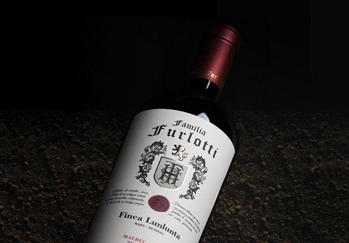Tendría como 18. Me iba caminando a la estación en Tigre. Viajaba en tren hasta Belgrano y ahí tomaba el trole hasta Palermo. Más o menos a 5 cuadras estaba Furlotti, la bodega donde trabajaba. Los vinos pasaban por una cinta y había dos mujeres que ponían las etiquetas y los corchos. Después yo tocaba un botón, venían los vinos y yo los colocaba en cajones. A veces me tocaba sacarle los corchos a las botellas que llegaban. La bodega tenía varios pisos y en el tercer piso había sidra. A la hora de la comida casi siempre descorchabamos una sidra y la tomabamos entre 3 o 4. Desoues de eso a veces jugábamos a la pelota en la calle. Teníamos equipo. Como la pelota de iba para las casas nos tiraban la bronca y empezamos a jugar en un lugar cerca del ferrocarril donde podíamos jugar sin molestar a nadie. Un muchacho que era de la capital cantaba las canciones de Gardel. Ahh cómo cantaba! Las compañeras se quedaban enloquecidas! Después de un año de trabajar ahí la bodega dejó de funcionar porque no llegaban los vinos.
Blanca
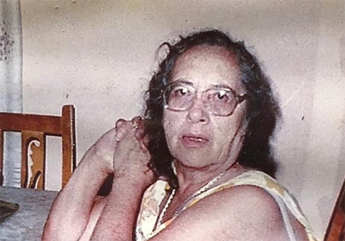En San Fernando, cuando iba para la estación para tomar el tren con el que iba mi trabajo, casi todos los días la veía a Blanca que venía de su trabajo caminando porque trabajaba de noche. Sabía dónde vivía, pero no pasaba nada hasta que un día empecé a hablarle y empecé a ir a la casa de ella donde vivía con su hijo. Al tiempo nos casamos.
La casa en San Fernando
Más o menos en el 65, cuando yo tenía 28 años, empecé a construir la casa en San Fernando. A construirla me ayudó don Cavia, un vecino que ya era grande y que sabía cómo construir las casas. Me ayudó también un vecino que vivía al lado de casa que sabía y otro vecino que vivía a la vuelta. La hice a partir de una altura porque se inundaba todo el barrio. Dije voy a hacer una casa y la voy a hacer bien hecha. Tenía piso, escalera y todo. Compré unos durmientes gruesos y anchos de quebracho y coloqué 6. Después le coloqué unos tirantes gruesos que compré en el aserradero que trabajaba y le hice un piso con tablas. Una vez que hice eso coloqué varios tirantes con tornillos para cubrir las paredes y coloqué el techo con una caída de una sola agua. Tenía muchas ventanitas chiquitas y un vecino le decía a la gente que ahí íbamos a poner los calabozos porque parecían como calabozos por las ventanas chiquitas. Ahí teníamos una heladera a kerosene y un televisor chiquito a batería porque no llegaba la luz todavía. A la batería del televisor las llevaba a cargar todos los días. Mirta, una hermana mayor de Mariana, venía a limpiar la casa mientras yo trabajaba. Ahí vivimos varios años, pero cómo se inundaba, a los años, nos fuimos para El Arco. Cuando nos dieron la luz en El Arco a la heladera y al televisor los regalamos a un hombre que vivía en las islas de tigre.
La casa en El Arco
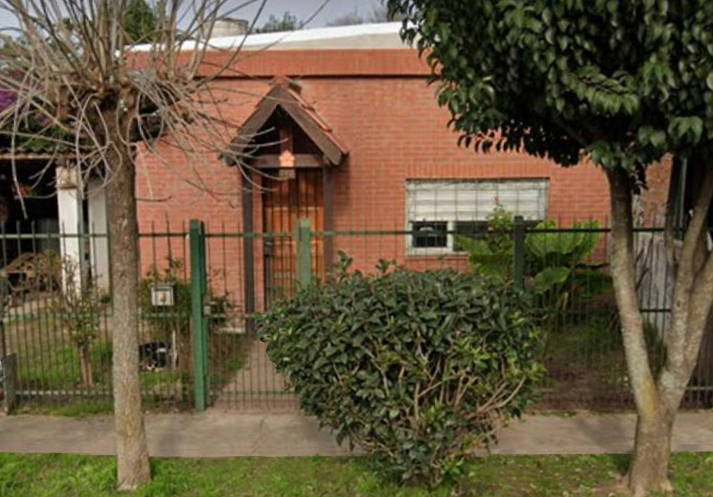Una amiga de Blanca le contó a ella que había un terreno en El Arco y se fueron juntas a verlo. Era de un hombre de Beccar al que se le fuimos pagando en cuotas y ahí construimos la casa. En un principio éramos pocos en El Arco. Estaban Matilde, un hombre flaco y alto del que no me acuerdo el nombre, Don José y los Pereyra. Como no había casas desde El Curvón se escuchaba fuerte el ruido de los camiones. No teníamos luz ni nada. Formamos una sociedad de fomento. Por la 9 pasaba el Chevallier y con la comisión de la sociedad de fomento de la que fui vocal hicimos una parada. También pedimos la luz y al tiempo nos la dieron.
Me contaron de Fate
Yo buscaba trabajo, pero no conseguía. Un día domingo fuimos a jugar un partido a Garín. Fue la primera vez que conocí Garín porque no había ido nunca. Había ido con Silvio. A la tarde me vine y Silvio y otro muchacho se quedaron por unos días. Cuando volvieron vieron un cartel que decía que estaban tomando gente en Fate. Cuando me vieron me contaron y me fui. Había como una cola de 20 personas buscando trabajo. Cuando me tocó a mí me preguntaron si había trabajado en algún lado. Le dije que había trabajado en varios lados.
Siriaco
También trabajé en otra cajonería. La cajonería de Siriaco, un hombre morocho, más grande que yo que solía venir a casa. Cuando iba a entrar en Fate me pedían los años que había trabajado antes. Conseguí, pero poco. En ese entonces tendría 22 años. No llegaba a los años de experiencia laboral que me pedía Fate. Me acordé de Siriaco. EL trabajaba en Beccar, en investigaciones. Él me dijo que no me haga problema, fue y me trajo un papel con 5 años de experiencia. Con ese entraba como tiro!
Prueba de ingreso a Fate
Había un muchacho joven, tendría como 25 años. Era el que nos tomaba. Nos dio un cuadernito con pruebas que había que resolver. Había un ejercicio con ladrillos que no sabía cómo hacer. Al lado había un muchacho y dije ahh! este lo está haciendo. Vi como lo estaba haciendo y lo hice como nada! jaaja. Pero nunca le dije al muchacho jajaa. Entró conmigo. Al tiempo se fue.
Falté al trabajo pero no sabía
La primer semana que trabajé Fate estaba llegando el fin de semana y había escuchado a unos compañeros decir: Nos vemos la semana que viene! Entonces yo pensé que el sábado a mi no me tocaba y me quedé en casa. Cuando volví el lunes me mandaron a hablar con el supervisor porque a mí si me tocaba y yo había faltado. Hablé con el, me dijo que cuando no sabía algo tenía que hablar con él. Me la perdono y me fui a trabajar en el sector en el que estaba, que era el de cámaras.
Jugaba mucho al fútbol
Jugué al fútbol por todos los lugares en donde estuve. Jugaba al fútbol en San Fernando, tuve un equipo en El Arco, jugamos en Garín, teníamos equipo en la bodega y tuvimos equipo en Fate. Con el equipo de Fate nos tocó jugar a varios lados.
Me quisieron robar
Una vez me iba caminando al trabajo por la ruta 9. Todavía estaba la 9 vieja. Iba caminando y mientras cruzaba vi que había unos hombres en un auto. Despu+es uno se bajó uno y me dijo que parara. Yo le dije andaa..! Seguí caminando y el hombre me tiro unos tiros. Pero habrá sido que no tenía puntería o que no me quería pegar porque no me pegó y yo seguí caminando por el costado de la ruta. Se subieron al auto, vinieron hacia mí, me pegaron con el espejo del auto en el brazo mientras pasaban y se fueron. Otro día, yendo al trabajo, yo esperaba el colectivo en una esquina, bajo una luz como a 10 metros de la parada y había unos tipos en un auto. Un tipo se quedó en el auto y 2 bajaron. Abrieron el baúl, pero no hacían nada. Habrán pasado unos 10 minutos y empecé a pensar.. Si viene el colectivo me voy. Había alguien que paró un colectivo que venía y yo fui para el colectivo para subirme y los tipos me decían vení! Vení! Pero noo.. quee.. yo me tomé el colectivo! Y mientras viajaba dije y dónde bajo ahora? Y bajé un puente pasarela de La Ford. Me quedé medio escondido porque tenía miedo de que me hubieran seguido, pero no.. no pasó nada. Vi que no me habían seguido y me fui. Otra vez cerca de unos departamentos altos le robaron a un compañero mientras esperaba el colectivo de Fate. Vinieron dos, le pidieron la plata y se fueron.
Me convertí en campeón de truco
Me gustaba jugar al truco y una vez, en la fábrica jugamos un campeonato. Gané y me dieron un trofeo.
Trofeos de tiro
Los otros trofeos que tengo en casa son de tiro. Iba a donde se practicaba tiro. Cuando apuntas a un hombre siempre apuntas más abajo porque el disparo te va a tirar para arriba. Y fui que gané unos trofeos porque tenía buena puntería.
Hicimos huelga
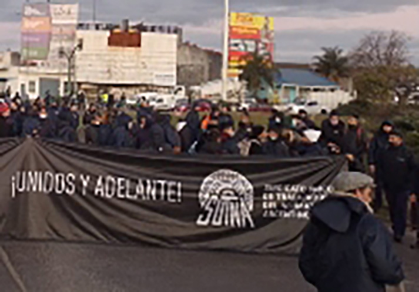En el 91 en la fábrica hubo una reforma laboral, hubo despidos un momento e hicimos huelga. Teníamos una bandera grande. Nos agarramos de los brazos uno al lado del otro y no dejamos pasar a nadie. Se armó un peloteo. Llegó la policía y nos corrió con balas de goma. A un compañero le pegaron. Menos mal que no lo mataron. A algunos compañeros los metieron en cana. Nosotros corrimos y escapamos. Como teníamos mucha sed tomamos agua de una canilla que estaba por el sindicato en la calle.
Me agarró la culebrilla
Me hicieron estudios y me dijeron que tenía herpes. Me dieron un remedio pero no se me curaba. Era la culebrilla. Estuve mal. Me fui a curar con una señora durante varios días pero como seguía mal me fui a ver a otra señora de la que hablaban mucho en Fate. Fui 7 días, pero no me curó. Dejé pasar 3 días, volví y la señora me dijo que como me habían curado mal de entrada tenía que volver por 7 días hasta curarme.
Cerca de jubilarme
Trabajé en Fate como 40 años hasta los 64 y medio. A los 65 te jubilabas. Faltaban 6 meses y me llamaron para preguntarme si quería arreglar. Y dije sii.. Total.. Ya no voy a hacer nada.. Y fui a casa.. Pero yo no había aceptado todavía. Si me jubilaba antes me pagaban como si estuviera trabajando hasta que me salga la jubilación.. Entonces arreglé.
Mis viajes
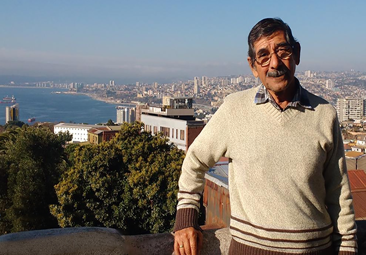Fui a Cataratas, conocí Mendoza, conocí Salta y Jujuy, crucé a Bolivia para hacer compras, visité San Luis, anduve por Córdoba, Fui a Bariloche y a Chile y por 6 años fui de vacaciones a Las Toninas
Silvia

Mi hija mayor
Paty
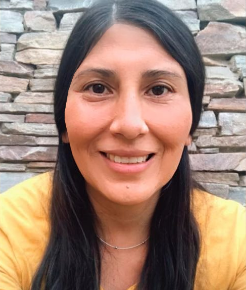Mi hija menor
Belu
Mi nieta
Carlos y Pato, mis yernos
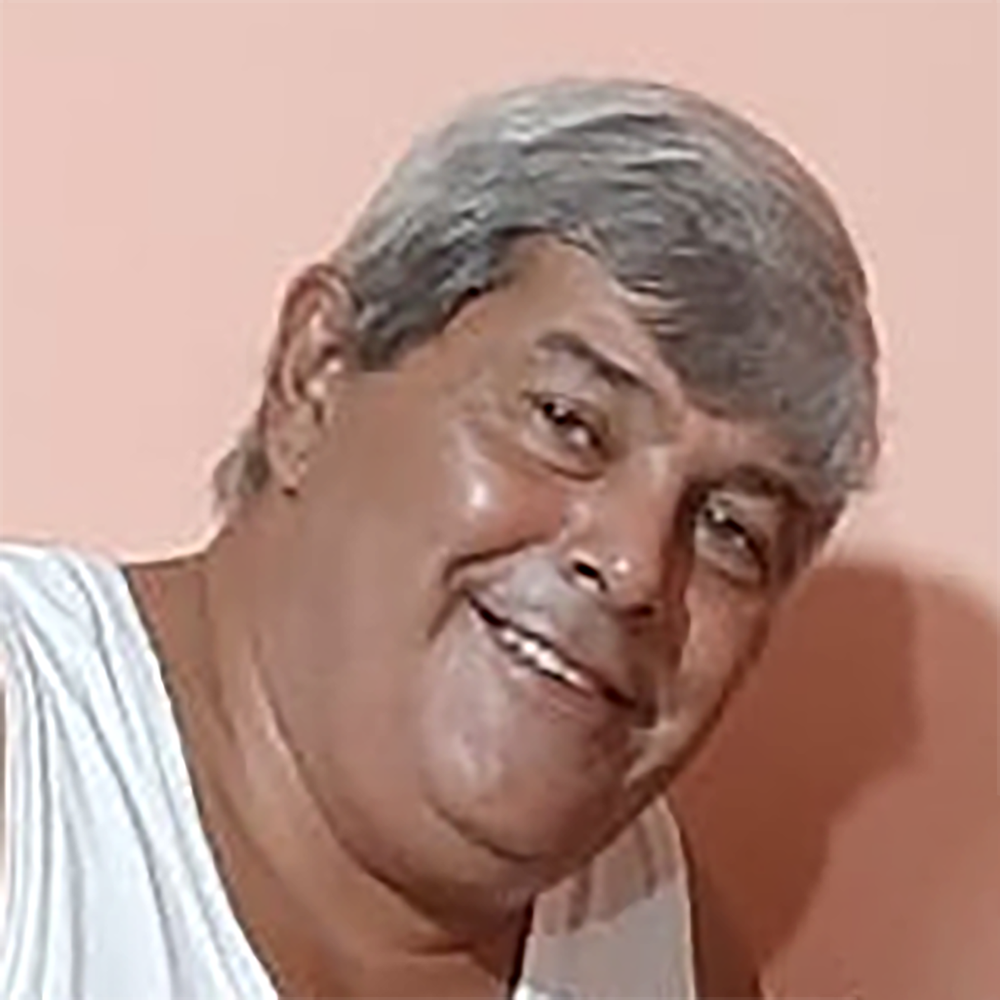Carlos
Pato
Algunas de las mascotas que tuve
Mi rutina
Me levanto más o menos a las 8 hs
Desayuno mate y galletitas con queso untable y mermelada
Almuerzo a eso de la una y le doy de comer a Manchi
Después duermo la siesta
Meriendo mate cocido y galletitas con queso untable y mermelada a eso de las 7 de la tarde
Manchi come otra vez a las 8:15 hs
A eso de las 9 almuerzo
Me acuesto más o menos a las 12 hs
Me afeito los lunes, los miércoles o jueves y los sábados
Como alimentos y yuyitos que me ayudan a cuidar mi salud
Cuando puedo salgo a caminar
Cuando puedo hago jardinería y limpio mi casa
Cada tanto voy al médico para que me controle
Planto calabazas y las cuido para que salgan lindas
Hago cuentas, pinto y hago sopas de letra para ejercitar mi mente
y cuando puedo salgo a caminar para hacer ejercicio.